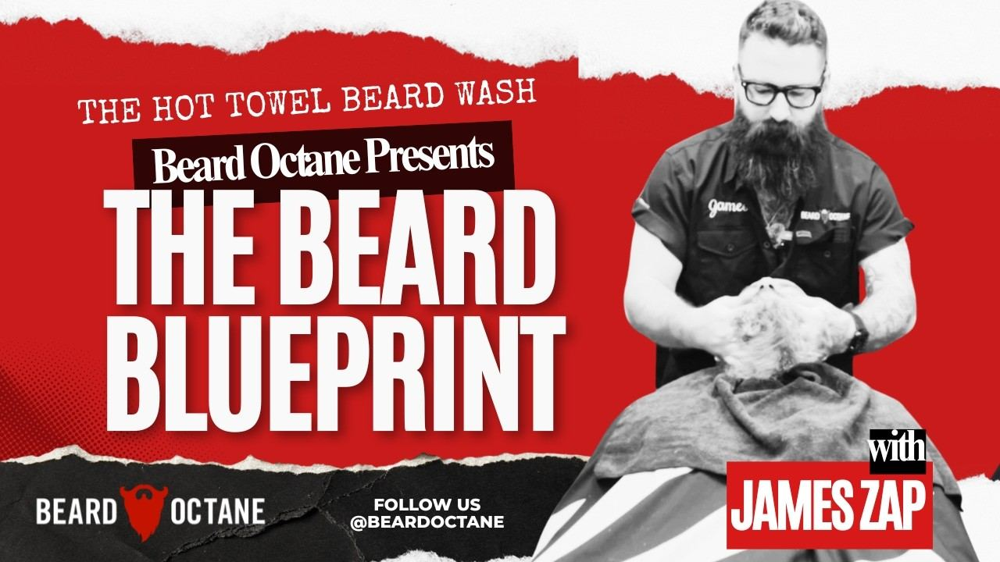

The Barber's Hot Towel Beard Wash: The Full Method at Home
The best part of a barbershop visit is not the trim — it is the hot towel. Heat and steam soften the beard, open the skin up, and turn an ordinary wash into the deepest clean a beard ever gets. Beard Octane's (@BeardOctane) video below teaches the barber's version of the method, including how to wash a beard properly without a sink setup. This guide adapts the full ritual for home: the towel prep, the wash sequence, and the cold finish that completes it.
Why the hot towel comes first
Heat softens beard hair significantly — a hot, damp towel draped over the beard for two to three minutes relaxes the coarse texture, loosens the day's grime and product from the hair and skin, and makes the wash that follows dramatically more effective. Barbers are not doing it for theatre; the towel is doing chemical-free work that no product replicates.
At home: soak a towel in hot water (hot, not scalding — test on your inner wrist), wring it to damp, and drape it over the beard, pressing gently. Recline if you can. Two minutes minimum; three is better. The beard that emerges is softer than the one that went in, and everything after this step works better because of it.
The wash sequence
Wash with the beard still warm and damp. Work a gentle beard wash through to the skin with your fingertips in small circles — this is a face, not a wave pattern, so circles are welcome here — then pull the lather through the lengths. Rinse warm and thoroughly; under a beard, rinsing is where home washes usually underperform, so take longer than feels necessary.
Condition now if it is a conditioning day, while the hair is still warm and receptive, then rinse again. Follow the method in the video for the sink-free technique — useful for travel, gym bags, and anywhere a proper sink setup is not available.
The cold close and finish
Barbers finish with a cool towel or a cold rinse, and the step is functional: it settles the skin, closes the routine down, and leaves the beard feeling tight and fresh rather than puffy and warm. Thirty seconds of cool is enough.
Then oil while the beard retains the faintest dampness, brush through, and look at the result: this is the cleanest and softest your beard can be, which is why the hot towel wash is best saved as the weekly deep-clean — the wash-day anchor your regular routine hangs from. Twice a week at most; the beard needs its natural oils on the other days.
Watch: Barbers: How to Wash a Beard WITHOUT a Sink | Hot Towel Beard Wash Method
Video: “Barbers: How to Wash a Beard WITHOUT a Sink | Hot Towel Beard Wash Method” by Beard Octane (@BeardOctane) · Watch on YouTube
Shop the gear
Everything in this guide runs on the right gear: a durag that holds compression without slipping, a cap that stays put, and fabric that treats your hair right. The durag.store launch lineup is built to that standard — dual-layer construction, long tails, and stitching made to survive the routine. Join the launch list and use code GOLDSTANDARD for 15% off your first order.
Keep learning
- Beard Care Basics: The Four-Step Routine Every Beard Needs — Basic · Beard Care
- Beard Oil: How Much, How Often, and the Application Most Men Get Wrong — Basic · Beard Care
- Beard Care in Cold Weather: Winter-Proofing Your Beard — Intermediate · Beard Care
Sources: Video — “Barbers: How to Wash a Beard WITHOUT a Sink | Hot Towel Beard Wash Method” by Beard Octane (@BeardOctane), youtube.com. Guide written by the durag.store Wave Lab.